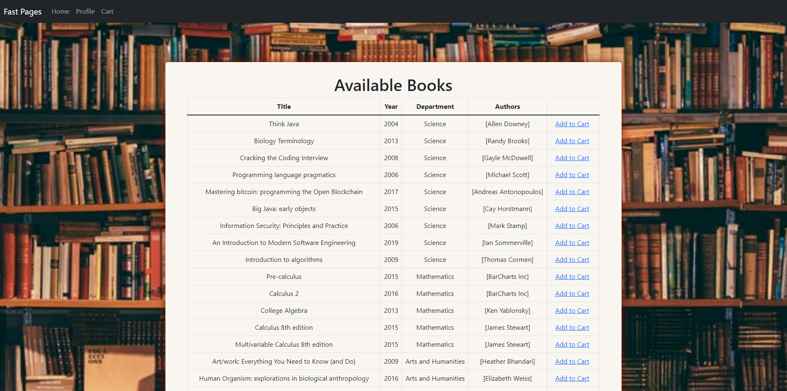

Users will either be redirected to the log in page after successful account registration
or can be directed to it instantly after clicking login on landing page.
Once a user is logged in, they are redirected to the homepage of the site. They are presented
with options to view all the books the library/store has to offer or view based on criterias like academic
department or by author.

Choosing the first option of viewing all books, user gets presented with all the books in the database.
The books are shown in order of when the books were published into the database. A future revision of this feature
would include the ability to filter books based on title, author, date, or department.
On the very right, the "Add to Cart" button showcases the feature for users to check out their choice
of book.
By selecting the Cart tab on the navigation bar, users can see what books are they have checked out
with the option to return the book by removing from their cart.
This application includes an admin account which comes with special privilleges. These privilleges
gives the admin of the library/store to add or edit books, authors, or departments, and see who has checked out
specific books.
Here, admins can add new books to the catalogue for other users to check out.
This catalogue page is the same for catalogue page for normal users, except now it has the option to edit or remove
books at admin's discretion.
Admins can view who is currently checking out what book from their catalogue.
Watch a demo video of Fast Pages and it's features in action!
Skim through a quick presentation about Fast Pages and see things like
code snippets, class, sequence, and database diagrams to learn our planning, designing, and implementing journey!
Use arrow keys "<" or ">" to traverse through slides!
The Fast Pages report offers same information as the power point but with more details about it's lifecycle.